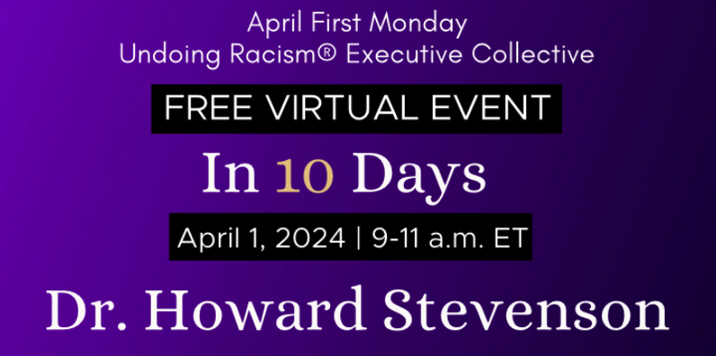

2024-03-23
Watching the Seeds I’ve Planted Blossom
I can’t believe it's finally Spring. I can feel myself coming more alive as the days get longer and the weather warmer. It's been a busy year so far and I’m looking forward to even more opportunities to collaborate and organize with individuals, groups and organizations. In the beginning of April, I will be attending a gathering for The People’s Institute of Survival and Beyond (PISAB). I am beyond excited to spend time with this group of wonderful humans. PISAB “is a national, multiracial, anti-racist collective of organizers and educators, who are dedicated to building a movement for social transformation with the aim to undo racism and other forms of oppression” (pisab.org). Their “Undoing Racism and Community Organizing Workshop” has changed my life and staying in relationship with them keeps me grounded and inspired. As I flow into the rhythm of Spring and new growth, community is in the forefront of my mind. One by one, workshop by workshop, relationship by relationship, I have the honor to witness the blossoming of the seeds I have been planting. This is what it means to “Build a Net that Works” (PISAB).
See you on the journey,
Robin
For Martin Luther King Day, Suzanne Hitchman and I created a space to connect with stiving white bodied anti-racists to reflect and set intentions for embodied anti-racism in the year ahead! The session included opportunities for grounding, community building, journal reflection and differentiated small group discussion. Together, we co-compiled a Community Garden of
resources for further study, action and resource mobilization in support of BIPOC lead social justice movement work. We did this becasue we believe MLK Day should be a day ON for white folx. All proceeds from this session were donated to Embrace Race https://www.embracerace.org/.
Dr. Alana Tappin and I just completed facilitating our “Shame Resilience and Transformation Skills for white people” training series for a group of white leaders at UCSF Benioff Children’s Hospital Oakland.
Training Objectives:
Achieve an understanding of whiteness, white supremacy and its impact on White people and Black, Indigenous, and other Racialized Peoples.
Begin building or continue building an active and lifelong anti-racist, anti-oppressive perspective and practice.
Understand what shame is, how it operates, and the likely role it plays in preventing you as a person with white privilege from taking more responsibility in antiracism work.
Develop shame resilience skills regarding whiteness that will help you as a person with white privilege to show up authentically in cross racial relationships, interpersonally and collectively, in order to increase accountability and contribute to the healing of racial trauma caused by white supremacy.
In May, Tracey Rollins Spann and I will be facilitating “The Impact of Racial Difference in Supervision and Management: Exploration and Tools for Practice” for The Seneca Institute for Advanced Practice.
Here is what people liked about our last training:
"The trainers were incredibly respectful and knowledgeable in navigating an inherently challenging topic. I appreciated the trainers calling out the white folks in the room."
"The frankness and authenticity of the discussions."
"The dispositions of and the hard work done by the presenters on the subject matter over time. The structure of the workshop and how well timed it was. I was also glad that they were firm in establishing that, with respect to intersectionality, this workshop was about race."
"Great content, appreciated the definitions and Ken Hardy material. I appreciated the mixed race facilitation."
"I thought the breakout groups were a great method to generate more intensive conversations. I also appreciated the reading material beforehand as a means to foster a dialogue and feel prepared for discussion."
At the end of February, Robin Alpern and I started our Spring session of “The Arc of White Womanhood.” I’m thrilled to say that we have 20 participants signed up to take this journey with us.
Here are some thoughts from past participants:
"This workshop really helped me to better understand the historical happenings that strongly influenced white women to hold on to some power in their "whiteness" when so much power had been taken away from them. Understanding more about how we got to where we are helps me feel more grounded to move forward."
"White women have a lot of explaining to do... and a lot to make up for."
"The workshop was well rounded! The resources provided a lot of information/history I wasn't familiar with. The presentations gave a deeper dive into understanding the topics.
"I am taking away so many insights but the one that comes up for me at this moment is: we didn't start out this way. The oppression of women was a structural oppression act. Then white women did choose and we chose wrongly (white supremacy). And that matters. Not in a shame based way but in an accountability way. Somehow this decreased my defenses. We have the possibility to choose again and make amends for the choices of our ancestors."

Undoing Racism®
Executive Collective Zoom Gathering
Join Us on Zoom: Monday, April 1, 9 a.m. - 11 a.m. EST
April Topic:
The Lion’s Story: Creating A Climate of Healing while Leading in a Climate of Hate
“The lion's story will never be known as long as the hunter is the one to tell it.”- African proverb
Navigating the stress of racial conflict and the rise in hate is not easy. Leaders and service providers are overwhelmed about what to do as identity stress and conflict disrupt processes essential to leading antiracist and anti-oppressive institutions. Dr. Stevenson will present a model of racial literacy (RECAST) useful for resolving diverse identity-stressful encounters and microaggressions. We will discuss ways leaders can practice skills of mindfulness and still find their voice when within divisive environments.
Presenter: Dr. Howard Stevenson
https://myemail.constantcontact.com/Join-Us--April-1-ZOOM-Gathering.html?soid=1119020740995&aid=92AYU8l6rrA
